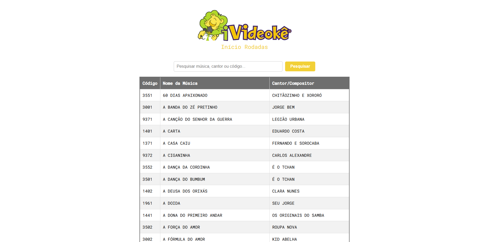

Fabio Guimarães
Desenvolvedor FullStack

Sobre mim
Atualmente cursando Análise e Desenvolvimento de Sistemas na UNISUAM, sou apaixonado pelo mundo da tecnologia e desenvolvimento. Minha jornada acadêmica tem sido marcada por dedicação, curiosidade e vontade constante de aprender e evoluir.
Participei de projetos acadêmicos, onde tive a oportunidade de aplicar conhecimentos teóricos em práticas reais, desenvolvendo soluções criativas e funcionais. Além disso, participei de apresentações e trabalhos colaborativos, aprimorando minhas habilidades de comunicação, trabalho em equipe e resolução de problemas.
Amo o que faço e estou sempre em busca de novas oportunidades para contribuir com projetos inovadores que impactem positivamente as pessoas e as organizações. Estou animado para compartilhar meus projetos e continuar crescendo nesse universo dinâmico da tecnologia.
Linguagens e tecnologias
Html
Css
JavaScript
PHP
React
MySQL
TypeScript
Apis
Outros...
Projetos
Cardápio Digital
Este é o Cardápio Digital que desenvolvi para trazer uma solução inovadora para restaurantes e estabelecimentos que desejam oferecer uma experiência mais interativa e prática aos seus clientes. Este projeto permite aos clientes navegarem pelos itens do menu de forma prática, com visual moderno e responsivo. Criando uma experiência para os clientes.
Html - Css - JavaScript
Landing Page DG Marketing
Este projeto foi desenvolvido para a agência DG Marketing, com o objetivo de contar sobre a empresa e seus serviços, mas claro sempre prezando pela usabilidade e seguindo as cores da marca do cliente. O cliente solicitou que os serviços fossem feitos em cards com um carrossel que se movimentasse de maneira automática.
Html - Css - JavaScript

Catálago De Músicas Videokê
Este Catálogo de Músicas Videokê foi desenvolvido com o objetivo de oferecer uma experiência prática, organizada e intuitiva na hora de escolher a música para cantar. Com um total de 1006 músicas, o catálogo apresenta a facilidade de buscar por nome da música, cantor/compositor ou código. E também uma aba para você calcular sua nota por rodada.
Html - Css - JavaScript
Contagem Regressiva De Namoro
Este projeto especial foi desenvolvido com carinho e dedicação para marcar a contagem regressiva até o próximo aniversário de namoro que iriamos fazer. A aplicação apresenta um contador em tempo real, exibindo de forma clara e precisa os dias, horas, minutos e segundos restantes para a data tão aguardada todo ano. Foi um presente de afeto que guardaa memorias nossas.
Html - Css - JavaScript
Gerador De QRcode
Este projeto transforma qualquer texto, link ou informação em um QR Code personalizado em segundos! Esse gerador de QR Code é uma ferramenta intuitiva e eficiente, perfeita para compartilhamento rápido de dados, seja para negócios, eventos ou uso pessoal. Fiz com objetivo de facilitar funções no dia a dia e por isso optei também por um design simples.
Html - Css - JavaScript
Entre em contato
Fique a vontade para entrar em contato comigo via rede social ou e-mail